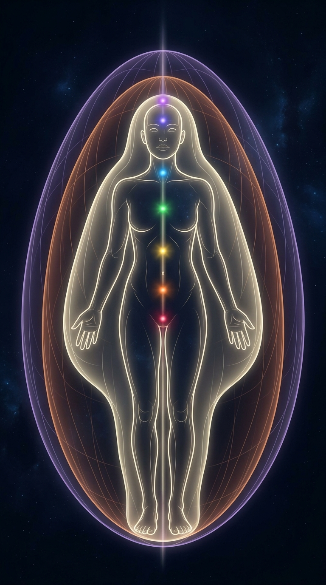

Persone che si trovano
in luoghi che esistono.
Porti quello che sai fare,
e trovi chi lo riconosce.
Ogni orma diventa uno strumento per fissare e
ricordare un’idea, un contatto e un obiettivo.
Ti aiuta a creare squadra, a darsi dei compiti e rispondere ai bisogni
della comunità.
Imparare a cooperare.
Uno strumento che parte da un’assistenza spirituale comune e mette insieme team, obiettivi, sviluppo di progetto. E poi la pubblicazione, la distribuzione e la visibilità di produzioni naturali, formazioni e mutuo aiuto.
Dove tutto quello che si muove
diventa visibile.

Dal progetto sogno
alla cooperazione per una civiltà evoluta.
Ti scriviamo quando apre, e nient’altro.
Per organizzare il tour di lancio, da ottobre a dicembre.
ScriviciTi scriviamo quando la piattaforma apre, e nient’altro. Puoi toglierti quando vuoi.
Se il modulo non si apre, scrivi a felicitasmundi@protonmail.com